The essence of Markov Chain Monte Carlo (MCMC) method is to solve a problem by mapping it onto an iterative sampling problem of statistics, whereby the sampling procedure is governed by an engineered kernel so that the iteration converges to the result of the original problem. This is particularly useful when dealing with problems which have exponentially large searching space which makes them hard to solve by enumeration, or where there is a computational wall that is hard to penetrate by existing algorithms, like exactly diagonalizing a huge Hamiltonian.
Although MCMC is widely used to simulate statistical ensembles (e.g. thermal average), the target of the original problem need not have statistical essence (e.g. Finding the ground state wavefunction of a Hamiltonian). In the latter case, iterations in MCMC serves as a statistical detour around the computational wall that stands between the destination and the starting point, and may be perceived as a useful intermediary redundancy which is ultimately to be removed by convergence at the fixed point.
Feng: add more examples in physics
What does a physicist mean by sampling?
Statisticians and physicists use the word sampling not in exactly the same convention. In the view of a physicist (dummy physicist like Shi), sampling simply means imposing an observable operator (a Hermitian matrix) Ô on a system’s Hilbert space for multiple times, which involves an average over either quantum or thermal ensemble, or both. In other words, given an observable Ô, some information is inevitably coarse-grained by the sampling thus not detectable even though the statistical mechanics of the underlying microscopics are well-modeled. This perception is a top-down picture, whereby details of the system cannot be thoroughly pinned down as we stand at the top side, and the sampled data are perceived as shadows of true physical laws distorted and coarse-grained by probes. Such deficiency of physical sampling will always be with us, and every physicist has to learn to live with it. Nonetheless, as statisticians will tell us in MCMC, we sometimes can utilize this fact as our strengths to give predictions of physical properties with decent accuracy.
What does a statistician mean by sampling?
A statistician will argue, as the resolution of our probe will never be enough to pin down every detail of the underlying mechanics, why not just coarse-grain the theory at the first place, thus calculations can be rendered easier. Hence, in statistics, sampling means the selection of a subset of all theoretical elements, or rather, distributions, to resemble the essence of the theory such that we can give a good enough prediction with lower cost. The simplest example will be the uniform random sampling.
Suppose we want to evaluate the integral:
|
| (1.1) |
where p(x) is a probability density distribution, f(x) is some physical property that is dependent on microscopic states x. Naively all we need to do is evaluate the integral by brute force and get the number output. But instead of doing such a verbose calculation, a simpler way is to obtain independent and evenly distributed samples {x1,x2,…,xN} from p(x), and calculate
 | (1.2) |
But the problem with this method is that the sampling resolution has to be extremely sharp when the density of states is huge somewhere. Hence if the theoretical distribution p(x) is spiky at a few x, we have to make significantly more sample points in order to tackle those peaks, even though the rest of p(x) are flat that doesn’t cost much. There is another preferred way that addresses this problem, whereby samples are picked up in such a way that they resembles the key information of the continuous distribution p(x), thus J can be evaluated by
 | (1.3) |
which should give a decent approximation of the original theory. In case of the canonical ensemble with Boltzmann
distribution, the probability density p(x) ∝ exp has most of its weight close to E = 0, and a thin, long tail at higher E.
Hence to do the aforesaid sampling, the subset of points that we need to pick up from p(x) need to concentrate more at low
energy and become sparse at high energy, so the essential information is captured. In MCMC, it is equivalent
to
has most of its weight close to E = 0, and a thin, long tail at higher E.
Hence to do the aforesaid sampling, the subset of points that we need to pick up from p(x) need to concentrate more at low
energy and become sparse at high energy, so the essential information is captured. In MCMC, it is equivalent
to
 | (1.4) |
where each xt is a configuration sampled at time t generated by some MCMC kernel, and it is expected to converge to the true J when N is large enough. This is exactly what the pioneers of MCMC in physics community did in [?] where authors used such nonuniform sampling to calculate thermal averages in canonical ensembles.
In this section we introduce the generic routine of MCMC, that is, to find a iteration kernel K that leads to the convergence to desired result, in which the final fixed point must satisfy the detailed balance condition (thus a global balance).
The current state in a Markov chain only depends on the most recent previous states, i.e,

Definition 2.1 (Markov Chain). MC = (Ω, 0,
0, ), where Ω is the state space, 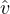 0 : Ω → ℝ is the initial probability
distribution function over the states,
), where Ω is the state space, 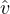 0 : Ω → ℝ is the initial probability
distribution function over the states,  : Ω × Ω → ℝ is the transition probability function. Where the hats on
: Ω × Ω → ℝ is the transition probability function. Where the hats on  and
and
 0 are used to emphasize they are essentially maps instead of numbers.
0 are used to emphasize they are essentially maps instead of numbers.
Remark: In many places the Markov Chain are defined without hats as MC = (Ω,v0,K). This may lead to the confusion in expression like v0K as it is usually written. Because maps do not multiply, but only interact via composition i.e. v0 ∘ K. Yet most of times v0K are used to describe the probability distribution, which is a tuple of real numbers instead of a composite map. Therefore we use the hats to distinguish probability distribution from probability distribution function. In the forthcoming texts, we will denote the evaluated probability function by lower case letters. For example
v0 =  0 ⋅ Ω,K = 0 ⋅ Ω,K =  ⋅ (Ω × Ω) ⋅ (Ω × Ω)
|
where v0 and K can be perceived as real-valued vector and matrix. Elements in vector v0 are real-valued probability of all configurations ωi ∈ Ω, and elements in matrix K are conditional probabilities that connect pairs of configurations.
Example 1 In the simplest Ising model on an a × b = N sites with Si = ±1, the state space Ω is the collection of all configurations i.e. Ω = ⊗ Nℤ2, with the total number of states #Ω = 2N. Each element ω ∈ Ω is a N dimensional tuple whose elements have value ±1. The initial probability distribution is denoted by the evaluated probability function v0, a real-valued tuple, where the subscript 0 says that the probability distribution is at zeroth iteration. Of course the initial probability distribution v0 is arbitrary thus not the desired distribution which we are trying to sample. Our goal is then to find a way to evolve v0 to v1,…,vn, hoping such a series would ultimately converge to the true probability distribution, e.g. the Boltzmann weights e-βEω for the Ising model in a canonical ensemble. This evolution of probability distribution is described by the aforementioned K.
At time n, the Markov Chain state will follow a probability for finite states, and the state converge to an invariant probability,
| vn = v0Kn and lim n→∞v0Kn = π |
Our objective is to design a Markov chain kernel K, such that π is the unique, invariant probability of K (a fixed point).
Suppose we are given Ω and a target probability π = (π1, ,πN)(1×N), our goal is to design v0 and K so that πK = π,
which is a necessary condition.
,πN)(1×N), our goal is to design v0 and K so that πK = π,
which is a necessary condition.
Here we check the conditions for topology of transition matrix:
We should know that the detailed balance is a sufficient but not necessary condition for global balance and we should know detailed balance indicates stationarity and in particular global balance,
πK = n
∑
i=1 πi[Ki1, ,KiN] = n ∑
i=1[π1K1i, ,KiN] = n ∑
i=1[π1K1i, ,πNKNi] = π ,πNKNi] = π
|
| ∑ i=1Nπ iKij = πj ∑ i=1NK ji = πj |
KijM = ∑
i1,i2, ,iM-1Kii1Ki1i2 ,iM-1Kii1Ki1i2 KiM-2iM-1KiM-1j > 0 KiM-2iM-1KiM-1j > 0
|
i ↔ j generates a partition of the state space into disjoint equivalence(communication) classes given by Ω = ∪i=1CΩi and one communication class means all the states are accessible from each other
C1,C2 ,Cd,∑
j∈CkKij = 1,∀i ∈ Ck-1 ,Cd,∑
j∈CkKij = 1,∀i ∈ Ck-1
|
In an periodic Markov Chain there is no connection between states within each individual cyclic class, and an irreducible Markov chain with transition matrix K is aperiodic if it’s largest period is d = 1.
| πK = π |
There may be many stationary distributions w.r.t K. Even if there is a stationary distribution, a Markov chain may not always converge to it.
Theorem 2.1 (Perron-Frobenius*). For any primitive (irreducible and aperiodic) N × N stochastic matrix K, with eigenvalues
λ1 > |λ2| >  > |λr| > |λr|
|
and multiplicities as m1,m2, ,mr, with u1 = π,v1 = 1 has the biggest eigenvalue λ = 1 with m1 = 1.
,mr, with u1 = π,v1 = 1 has the biggest eigenvalue λ = 1 with m1 = 1.
Proofs can be found here in both numerical(tr(K) = ∑n
i=1 Kii = ∑r
i=1 miλi) and geometric perspective(by defining sphere
x12 + x12 +  + xn2 = 1). More detailed one can be found here.
+ xn2 = 1). More detailed one can be found here.
For a square matrix, we have eigen decomposition as K = QΛQ-1 and as n →∞,
| Kn = QΛQ-1 = QΛnQ-1 → λ 1v1u1 = 1π |
The global balance equations are a set of equations that characterize the (dynamical) equilibrium distribution (or any stationary distribution, for example, a composite chemical system in a dynamical equilibrium).
Suppose at time t we have some initial pdf configuration π(0) = (p1,p2) which may be perceived as a discrete pdf of two distinct chemical compounds, and the transition matrix K is defined:
| K = 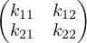. |
that is, at time t + 1 the new distribution π′ is:
 | (2.1) |
with the row-major index notation we can write:
|
| (2.2) |
If the system reaches an equilibrium state at time T , then the state at next moment T + 1 should remain the same (to be precise, they are element-wise the same), that is:
 | (2.3) |
For short, we say at equilibrium we have a fixed point characterized by
 | (2.4) |
In the context of probability theory, let Ω be the total state space, and let a,b ∈ Ω be two different states. Suppose at time t the probability for the system to stay in state a is p(a), and the probability of state a to transit into state b at next moment t + 1 is p(at → bt+1). Therefore, the probability for the system to stay in state b at t + 1 and in a at the previous moment is:
|
| (2.5) |
note that we have implicitly used that p(a → b) is essentially a conditional distribution i.e. pt(a → b) ≡ pt(bt+1|at). Now note that not only can a transit to b, but there can be many other states which have non-zero probability to transit into b in the next moment. Therefore, the probability of the system to stay in state b is
 | (2.6) |
Now we can identify p(bt+1) as vb(t+1): the probability that the system be at b-th state at the t + 1, and p(at → bt+1) as kab: the probability that the system transits from a-th state at t to b-th state at t + 1:
| p(bt+1)⇐⇒vb(t+1) |
| p(at → bt+1)⇐⇒kab |
Therefore the global interation can be written as:
 | (2.7) |
or in the matrix form:
|
| (2.8) |
if the a fixed poin is reached at T then:
 | (2.9) |
Note: MCMC samples are correlated. Discuss the independent case, then discuss the correlated case. Error bar can be crucial in Baysian mothods. Call central limit theorem.
α(x,y) = min 1,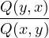 ⋅ 1,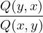 ⋅ 
|
3. With the probability α(x,y), we have x(t+1) = y, otherwise x(t+1) = x(t)
As the above notations, for x,y ∈ Ω, we have
| K(x,y) = 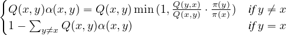 |
Next we want to prove this definition of transition matrix K satisfies the detailed balance.
| π(x)K(x,y) | = π(x)Q(x,y)min 1, 1, ⋅ ⋅  = min = min π(x)Q(x,y),π(y)Q(y,x) π(x)Q(x,y),π(y)Q(y,x) | ||
| π(y)K(y,x) | = π(y)Q(y,x)min 1, 1, ⋅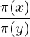 ⋅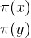 = min = min π(y)Q(y,x),π(x)Q(x,y) π(y)Q(y,x),π(x)Q(x,y) |
In many cases, the target distribution is written as a Gibbs distribution or Boltzmann distribution,
π(x) =  e-E(x), orπ(x) = e-E(x), orπ(x) =  e-E(x)∕T e-E(x)∕T
|
For simplicity let us used Gibbs for an example. While the normalizing constant is hard to compute, suppose the proposal probability is symmetric, i.e. Q(x,y) = Q(y,x), then the acceptance probability becomes
| α(x,y) = min(1,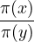) = min(1,e-(E(x)-E(y))) = min(1,e-△E) |
In this way, if △E < 0, i.e. state y has lower energy, α(x,y) = 1, and x(t+1) = y; if △E > 0, i.e. state x has lower energy, α(x,y) = e-△E. Note that △E is often computed locally as the two states x and y share most of their elements.
There exist other designs for the acceptance rate that guarantee the detailed balance equation, such as
| α(x,y) = 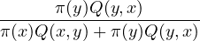 |
Or more generally,
| α(x,y) = 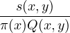 |
where s(x,y) is a symmetric function.
With this method, we can maximize a function for optimization by slowly changing the stationary distribution π(x) with additional temperature T . The temperature starts from a high T0 and decreased to 0 as n →∞.
| π(x,Tn) = 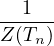e-E(x)∕Tn |
which is known as simulated annealing method.
The first implementation of M-H algorithm is carried out in
[?], whose underlying theory was given much later in [?].
See example C++ code in https://github.com/fengshi96/MCMC.
Gibbs sampler was created for obtaining samples from distributions that are difficult to sample. Here we use the vector form, and E(x) denotes the energy function,
π(x) =  e-E(x),x = (x
1,x2, e-E(x),x = (x
1,x2, ,xd) ∈ Ω ,xd) ∈ Ω
|
The Gibbs sampler was introduced as a stochastic version of the relaxation algorithm. In this way, we first introduce the relaxation algorithm, which has no no guarantees for finding the global optimum and in fact, it often gets stuck in local optima.
 ,xd}∈ Ω and each xi can have L possible values as
{y1,y2,
,xd}∈ Ω and each xi can have L possible values as
{y1,y2, ,yL}.
,yL}. ,d} at random.
,d} at random.
u = arg minyl E(xi = yl|x-i) E(xi = yl|x-i) for l = 1,2, for l = 1,2, ,L ,L
|
3. Let
| x-i(t+1) = x -i(t) and x i(t+1) = u |
In formal, the goal of Gibbs sampler is to sample a joint probability,
x = (x1,x2, ,xd) ~ π(x1,x2, ,xd) ~ π(x1,x2, ,xd) ,xd)
|
by sampling in each dimension according to the conditional probability,
| xi ~ π(xi|x-i) = 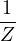exp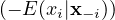 |
 ,xd}∈ Ω and each xi can have L possible values as
{y1,y2,
,xd}∈ Ω and each xi can have L possible values as
{y1,y2, ,yL}.
,yL}. ,d} at random.
,d} at random. ,uL)with
,uL)with
| ul = π(xi = yl|x-i) |
3. Sample j ~ u and set x-i(t+1) = x-i(t) and xi(t+1) = yj.
Here I want to point out the difference explicitly. When updating one element of the current sample, relaxation algorithm finds the current local minimum and Gibbs sampler samples from its distribution. We should know that only find the local minimum will limit the stochasticity.
A sweep of the Gibbs sampler is a sequential visit to all of the sites (variables) once. Although the transition matrix Kii for one
Gibbs step may not be irreducible and aperiodic, it is easy to show that the total transition matrix K = K1K2 Kd does have
these features after one sweep.
Kd does have
these features after one sweep.
If we have x(t) ~ π(x), by above procedure,
| x(t) | = (x
1, ,xi,xi+1, ,xi,xi+1, ,xd) ~ π(x) ,xd) ~ π(x) | ||
| x(t+1) | ~ π(y j|x-i)π(x-i) | ||
~ π(yj|x1, ,xi-1,xi+1, ,xi-1,xi+1, ,xd)π(x1, ,xd)π(x1, ,xi-1,xi+1, ,xi-1,xi+1, ,xd) ,xd) | |||
| x(t+1) | = π(x
1, ,xi-1,yj,xi+1, ,xi-1,yj,xi+1, ,xd) ~ π(x) ,xd) ~ π(x) |
Let  = (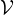,
= (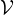, ) be an adjacency graph. Each vertex vi ∈ has a state variable xi with a finite number of labels, i.e.
xi ∈{1,2,
) be an adjacency graph. Each vertex vi ∈ has a state variable xi with a finite number of labels, i.e.
xi ∈{1,2, ,L}. If X = (x1,x2,
,L}. If X = (x1,x2, ,x|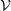|) denotes the labeling of the graph, the Ising (L = 2) or Potts (L ≥ 3) model is a
Markov Random Field,
,x|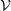|) denotes the labeling of the graph, the Ising (L = 2) or Potts (L ≥ 3) model is a
Markov Random Field,
π(x) =  exp exp -∑
⟨s,t⟩∈ -∑
⟨s,t⟩∈ βst1[xs≠xt] βst1[xs≠xt]
|
The Swendsen-Wang (SW) algorithm introduces a set of random variables on the edges indicating if they are connected or not,
U =  μe : μe ∈{0,1},∀e ∈ μe : μe ∈{0,1},∀e ∈
|
The edge is connected is μe = 1. The binary variable μe follows a Bernoulli distribution conditional on the labels of the vertices e connects, xs , xt,
μe|(xs,xt) ~ Bernoulli (1 - e-βst
)1[xs = xt] (1 - e-βst
)1[xs = xt] ,∀e ∈ ,∀e ∈
|
μe = 1 with probability 1 - e-βst if xs = xt and μe = 0 with probability 1 if xs≠xt.
The SW algorithm iterates the clustering and flipping step. In clustering step, given the current labeling, we calculate the adjacency of the graph and form a set of connected components with the same label. In flipping step, we randomly select a connected component and assign an arbitrary color to all the lattice inside the connected component. In this step, one may choose to perform the random color flipping for some or all of the connected components in CP independently, as they are decoupled. By doing so, all possible labelings of the graph are connected in one step, just like one sweep of the Gibbs sampler.
= (,), a set of random variables for each edge as U = {μe : μe ∈{0,1},∀e ∈} denoting
their connectivity and a set of random variables denoting the label of the lattice as X = {xi : xi ∈{1,2, ,L},∀i ∈}.
,L},∀i ∈}.|
μe(t+1)|(x
s(t),x
t(t)) ~ Bernoulli((1 - e-βst
)1[xs(t) = x
t(t)]),∀e ∈
|
In practice, we first let μe(t+1) = 0 if xs(t)≠xt(t) for each e = ⟨s,t⟩ and then the remaining μe(t+1) = 0 with the probability
e-βst. Hence, the left edges form K connected components as CP(U,X) = {cpi : i = 1,2, ,K, with ∪i=1Kcpi = }.
Each connected component is a set of lattice with the same label.
,K, with ∪i=1Kcpi = }.
Each connected component is a set of lattice with the same label.
2. the flipping step: randomly assign each connected component with a new label.
Select one connected component V o ∈ CP at random and assign a common label l to all lattice in V o. The new label l follows
a discrete uniform distribution,
xs(t+1) = l,∀s ∈ V
o,l ~ Uniform{1,2, ,L} ,L}
|
Next, we want to show that the SW algorithm can be interpreted as a Metroplis-Hastings step with acceptance rate 1.
As shown in Figure 1, suppose the current state is A where V 0 is connected to V 1. The edges between V 0 and V 1 are turned off in the clustering step with the probability e-β, from which we form a cut C01 between V 0 and V 1 as C01 = {e = ⟨s,t⟩,s ∈ V 0,t ∈ V 1}(as crosses in figure). Similarly, if the Markov chain is currently at state B, in order to achieve A, we also form a cut C02 = {e = ⟨s,t⟩,s ∈ V 0,t ∈ V 2}. From the setting of Metroplis-Hastings, we need to compute the proposal probability Q(A → B) and Q(B → A), which is difficult but their ratio can be shown as
 | (6.1) |
where |⋅| denotes the cardinality of a set. Remarkably, the ratio of the probability distribution is also decided by the size of the cuts because the probability distribution counts the number of connected edges.
|
| (6.2) |
Hence, the acceptance rate is given by
 | (6.3) |
At low temperature, β ∝ 1∕T and thus the SW flips large patches with acceptance rate 1. Therefore, it can mix quickly even at critical temperatures.
Proof. (of Equation 6.1) Let UA|(X = A) and UB|(X = B) be realizations of U at state A and state B. In the clustering step, we form two sets of connected components as CP(UA|X = A) and CP(UB|X = B).
For UA|(X = A), following the Bernoulli probabilities, we divide the UA into on and off edges as UA = UA,on ∪ UA,off, where UA,on = {μe ∈ UA : μe = 1} and UA,off = {μe ∈ UA : μe = 0}.
However, we are only interested in those UA which are able to yield V 0. We collect all such UA including V 0 given A is a set, Ω(V 0|A) = {UA : V 0 ∈ CP(UA|X = A)}. To be concrete, in order to get V 0, all edges between V 0 and V 1 must be cut off. We denote the remaining off edges as -UA,off in a sense that -UA,off ∪ C01 = UA,off for all UA ∈ Ω(V 0|A).
Similarly, we have -UB,off as -UB,off ∪ C02 = UB,off for all UA ∈ Ω(V 0|B).
A key observation in this formulation is that there is a one-to-one mapping between Ω(V 0|A) and Ω(V 0|B) because we have a one-to-one mapping between UA and UB by setting UB,on = UA,on and UB,off = -UA,off ∪ C0,2.
That is, UA and UB only differ in the cuts and all these random variables inside the cuts are set as off. In other words, their connected components are the same CP(UA|X = A) = CP(UB|X = B). Similarly, any UB ∈ Ω(V 0|B) has a one-to-one mapping to UA ∈ Ω(V 0|A).
Now suppose we choose V 0 ∈ CP(UA|X = A) randomly, its probability is
P(V 0|A) = ∑
UA∈Ω(V 0|A) ∏
e∈U
A,on(1 - e-βe
)∏
e∈-U
A,offe-βe
∏
e∈C01e-βe ∏
e∈U
A,on(1 - e-βe
)∏
e∈-U
A,offe-βe
∏
e∈C01e-βe
|
Similarly, the probability of choose V 0 in state B is
P(V 0|B) = ∑
UB∈Ω(V 0|B) ∏
e∈U
B,on(1 - e-βe
)∏
e∈-U
B,offe-βe
∏
e∈C02e-βe ∏
e∈U
B,on(1 - e-βe
)∏
e∈-U
B,offe-βe
∏
e∈C02e-βe
|
In this way, we have
 = =  = 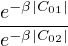 = e-β(|C01|-|C02|) = 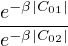 = e-β(|C01|-|C02|)
|
__
Kong: Just copy the original book for further understanding.
Hamiltonian Monte Carlo (HMC) is a powerful framework for sampling from high-dimensional continuous distributions. Langevin Monte Carlo (LMC) is a special case of HMC that is widely used in Deep Learning applications. Given an n-dimensional continuous density P(X), the only requirement for implementing HMC is the differentiability of the energy U(X) = -log P(X). Like other MCMC methods (e.g. slice sampling, Swendsen-Wang cuts), HMC introduces auxiliary variables to facilitate movement in the original space. In HMC, the original variables represent position, and the auxiliary variables represent momentum. Each position dimension has a single corresponding momentum variable, so the joint space of the original and auxiliary variables has dimension 2n, twice the size of the original space. Once the momentum variables are introduced, Hamilton’s Equations are used to simulate the time evolution of a physical system with potential energy U . The properties of Hamilton’s Equations ensure that movement in the joint space preserves the distribution of P in the original space.
Hamiltonian Mechanics was originally developed as an alternative but equivalent formulation of Lagrangian Mechanics, and both are equivalent to Newtonian Mechanics. In Hamiltonian Mechanics, the states of a physical system are represented by a pair of n- dimensional variables q and p. The variable q represents position in the system, and p represents momentum. A joint state (q,p) provides a complete description of the physical system at a single instant in time.
The evolution of a state (q,p) over time is governed by a scalar-valued function H(q,p) representing the energy of the system, and a pair of partial differential equations known as Hamilton’s Equations:
 | =  | ||
 | = - |
H(q,p) is often referred to as the Hamiltonian of the system, and it remains constant as (q,p) evolves over time.
Supplemental
More details about this section can be found in [?].
The basic building blocks of a probability theory can be formalized in the following:
These together make the probability triple (Ω,𝔉,P) TODO: what’s its physics analogy.
Why Borel field?
MCE focus on systems that are mechanically and adiabatically isolated from its environment (ΔE = W = Q = 0). The
general coordinates  is fixed, so that there is no work done i.e. W = 0; Internal energy E is also fixed since
Q = 0 ⇒ ΔE = Q + W = 0. This is the macrostate given E,
is fixed, so that there is no work done i.e. W = 0; Internal energy E is also fixed since
Q = 0 ⇒ ΔE = Q + W = 0. This is the macrostate given E, , denoted by M ≡ (E,
, denoted by M ≡ (E, ). The corresponding set of mixed
microstates form the microcanonical ensemble.
). The corresponding set of mixed
microstates form the microcanonical ensemble.
A microstate in the phase space is labeled by μ i.e. phase space coordinate μ ≡ (x1,p1,…,xN,pN), whose time evolution is
governed by  (μ). In MCE, the Hamiltonian conserves the total energy of a given system, so all valid microstates are confined
to the surface (μ) = E. The central postulate of Statmech states that the equilibrium probability distribution is given
by:
(μ). In MCE, the Hamiltonian conserves the total energy of a given system, so all valid microstates are confined
to the surface (μ) = E. The central postulate of Statmech states that the equilibrium probability distribution is given
by:
 | (S1) |
The zeroth law
Consider two microcanonical systems (each with a large dof), their state in phase space are μ1 and μ2 respectively. We allow
them to exchange energy but not work. Remember these are systems modeled by MCE, so their state μi is determined by
internal energy Ei and  only.
only.
The combined system has energy:
| E = E1 + E2. |
For this big system, (at any moment), its position in phase space is spanned by μ = μ1 ⊗ μ2. Therefore the Hamiltonian is described by:
|
| (S2) |
and
|
| (S3) |
Note: Here the Big system itself is viewed as a MCE! Now we count how many states μ = μ1 ⊗ μ2 are possible. For each pair of {E1 ±dE1∕2,E2 ±dE2∕2}, there are Ω1(E1) × Ω2(E2) states. Therefore the total allowed states for the Big system is:
 | (S4) |
we can write Ω as Ω = exp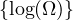 = exp , so:
, so:
 | (S5) |
According to (3), all states are equal weighted, therefore the energy that produces largest Ω(E) is the equilibrium energy we are looking for. Since the integrand is exponentially large, we expect the mean contribution is from the peak defined at E1*, so that S1 + S2 is maximized, thus the total entropy is maximized:
 | (S6) |
Now we find E1 that maximize S1 + S2:
 | (S7) |
therefore:
 | (S8) |
which must be satisfied when the joint system reach the equilibrium! It is consistent with zeroth law, that systems in equilibrium has equal temperautre:
 | (S9) |
note they are evaluated at their own fixed x.
The story of sampling
This part, I will recap the history of sampling from the posterior distribution, which is a unique chance to grasp the main idea of sampling in statistics. Thanks S. Feng.
In history, with the power of Central Limit Theorem, we can use a single point estimate for a parameter and its standard error. (Kong: CLT talks about asymptotic normality of a distribution, but why we call it a single point estimation and does it has anything to do with estimate of sample mean?) However, in the view of Bayesian analysis, we seek to summarize the entire posterior distribution. The key difference lies in that here Bayesian tends to use entire posterior distribution rather than the mode of likelihood function and standard errors. In the same way, if we are able to summarize the entire posterior distribution for a parameter, there is no need to rely on asymptotic arguments about the normality of the distribution: It can be directly assessed.